| 45分でわかる！数字で学ぶ仏教語。 | |
| 星飛雄馬 | |
| (2011) | |
マガジンハウス
45 分でわかる！
数字で学ぶ仏教語。
星 飛雄馬
数字で学ぶ仏教語。 ＼ もくじ
Introduction ＼ はじめに
１＼ 一 念
２＼ 三 蔵
３＼ 三 途 の川
４＼ 三 毒
５＼ 三 宝
６＼ 三 界
７＼ 三 学
８＼ 四 苦 八 苦
９＼ 四 無 量 心
10 ＼ 四 法 印
11 ＼ 四 大
12 ＼ 四 摂 事
13 ＼ 四 天 王
14 ＼ 四 諦
15 ＼ 五 蘊
16 ＼ 六 師 外 道
17 ＼ 六 神 通
18 ＼ 六 門
19 ＼ 七 難
20 ＼ 七 仏 通 戒 偈
21 ＼ 七 覚 支
22 ＼ 七 宝
23 ＼ 八 正 道
24 ＼ 八 斎 戒
25 ＼ 十 波 羅 蜜
26 ＼ 十 二 因 縁
27 ＼ 三 十 二 相 八 十 種 好
28 ＼ 三 十 七 菩 提 分 法
29 ＼ 百 八 渇 愛
30 ＼ 五 十 六 億 七 千 万 年
Conclusion＼ おわりに
Introduction ＼ はじめに
本書は、数字を含む仏教語を気軽に学ぶため、コンパクトにまとめたものです。仏教では、もともと西暦五世紀頃に文字のかたちで経典がまとめられるまでは、経典は主に口 誦 によって暗記して伝えられてきました。
膨大な経典の内容を間違いなく暗記するのは大変です。そこで、偈 という詩の形式にすることによって韻を踏んだり、繰り返しを多く含むことにより、経典の内容を覚えやすくするような工夫がとられました。
抽象的な概念を覚えやすくするように、数でまとめたのもそのような工夫の一つです。そのため、基本的な仏教語は特に、数にちなんだものが多く含まれています。
そのような数にちなんだ仏教語を、本書では特に大切なものを中心に三十項目集めてみました。
言葉に含まれる数の順番にならべてあるので、通常の本のように意味のあるグループごとに章だててあるわけではないので、どの項目からでも、面白そうだと思ったところから気軽にお読みいただければと思っています。
また、本書の一つのねらいとして仏教は知識ではなく、実際にやってみるものだということをお伝えしたかったということがあります。
仏教の言葉には「諸行無常」や「一切行苦」といった、私たちにとって何となく暗いイメージを呼び起こさせるような表現が多く出てきます。
けれども、仏教の言葉をきちんと理解してみると、苦しみについて説かれたときには、必ずその解決方法がセットで語られていることがわかります。
ですから、仏教は決して暗い教えなどではなく、むしろ私たちの毎日をハッピーにする、明るい教えなのです。
本書を読まれることによって、皆様が仏教語の煩 瑣 なイメージから解放され、雑学としての仏教知識ではなく、道具として仏教の教えを活用できるようになれば著者としてこれ以上の喜びはありません。
星 飛雄馬
１＼ 一 念
「一念岩をも通す」「一念発起」など、多くの日常会話の中に使われている一念という言葉。この言葉が、仏教用語であることをご存知でしょうか。
一念とは、仏教できわめて短い時間や、その短い時間に生じる、わずかな心の動きを意味する言葉です。このなかの、「念」という言葉は、古代インドの言語であるパーリ語で「サティ」といい、「気づき」を意味します。
念（サティ） は、今この瞬間にきちんと気づき、過去や未来に心がさまよったりしないこと を意味します。
現代社会に生きる私たちは、とても多くの情報に囲まれて生活をしています。情報が多いこと自体は悪いことではありませんが、往々にして自分でも気がつかないうちに、情報に振り回されてしまうことがあります。
そんなときに思考を一旦停止させ、今の状況を確認することを指して仏教では念（気づき）と言っています。
私たちは、日常生活のなかで、欲や怒りの感情に巻き込まれてしまうことがあるかもしれません。でも、そんなときに落ち込んだり、自分を卑下する必要はありません。そのようなネガティブな感情が生じたときには、「あっ、今自分は怒っているなぁ」と、ただ、その感情に気づき、やさしく認めてあげればよいのです。このとき、「やさしく」ということがとても大切です。
なぜかというと、ネガティブな感情というものは、無理やり押さえ込んだり、否定することによって、心の奥底に沈殿していき、自分自身でさえ気づかないような心の傷を生み出してしまうことがあるからです。欲望に囚われたり、激怒したりしている自分を否定しすぎてしまうと、自分自身が嫌いになってしまいます。
ですから、否定的な感情に対しては、その感情に振り回されることなく、かつ拒絶することなく、ありのままの感情をやさしく見つめるための訓練が必要なのです。
仏教では、そのように自分自身の心や身体の状態を確認し、気づくための練習を指して「気づきの瞑想」と言っています。私たちの心が完全に解放され、自由となるまでこの気づきの瞑想に頑張って取り組むように、というのがブッダの遺言でもあります。
日本仏教で見逃されてきた「気づき」の教え
このように、仏教のあらゆる教えはここに集約されるとまで言われる念（気づき）の実践ですが、不思議なことにこれまであまり日本仏教のなかでは省みられることがありませんでした。
その理由は、日本に仏教が中国を経由して伝わったことにあります。インドで二六〇〇年前に生まれた仏教は、中国や朝鮮を経由し、日本に伝わります。これを北伝仏教といいます。
この北伝仏教に対して、インドからスリランカを経由し、タイやミャンマーに伝わった仏教を南伝仏教といいます。
気づきの瞑想は、南伝仏教の中では大切に伝えられてきた教えでしたが、北伝仏教の中では重視されてこなかったため、これまで日本では馴染みがありませんでした。
ですが、最近になって日本でも徐々に南伝仏教が紹介されるようになり、女性を中心に、気づきの瞑想を実践する人も増えてきました。
最初は難しく感じるかもしれませんが、繰り返し実践するうちに、感情に振り回されることが少なくなり、智慧が養われてきます。仏教で最も大切とされる気づきの瞑想、ぜひ皆さんも取り組んでみられてはいかがでしょうか。
２＼ 三 蔵
『西遊記』のお話で有名な三蔵法師。実は、この三蔵法師には実在のモデルがいます。三蔵法師は、七世紀の中国、唐の時代の僧侶である玄 奘 三 蔵 をもとに創作された人物なのです。
現在の河南省に生まれた玄奘三蔵は、英才の誉れ高く、幼くして僧侶の道を志したといいます。二十一歳で正式に具 足 戒 を受けた後も、玄奘は中国各地を回り仏教の学習を深めました。
しかし、それでもなお玄奘の仏教に対する学びの意欲が衰えることはありませんでした。どうしても仏教の本場のインドで学びたいと思った玄奘は、唐王朝へ出国の許可を求めましたが、許しを得ることはできませんでした。そこで、玄奘は国禁を犯してでもインドへ渡ることを決意します。
唐を出て、インドへ向かう玄奘の旅をシルクロード流域の国の王が庇護しました。そのため、極めて過酷な旅だったにも関わらず、キャラバンとともに、ついに玄奘はインドにたどり着いたのです。
インドにおいて当時最高の仏教研究機関であったナーランダー大学で学んだ玄奘は、最先端の仏教の知識と、たくさんの貴重な経典とともに、中国に帰京します。二十代でインドへと旅立った玄奘も、その頃には四十三歳となっていました。
三蔵経典は仏教の教えの集大成
このとき玄奘がインドから持ち帰った貴重な聖典のことを、三蔵といいます。この「蔵」という言葉の原語はサンスクリット語で「ピタカ」といって、「かご」の意味です。三つの大切なものが入った入れ物という意味ですね。この三蔵は経蔵、律蔵、論蔵の三つからなります。
一番目の経蔵とは、ブッダの説いた経典を集めたものです。南伝仏教では、経典はその長さなどから大きくわけて、①長部、②中部、③相応部、④増支部、⑤小部の五つからなります。
二番目の律蔵は、僧侶が守るべき戒律を集めたものです。仏教では、男性の僧侶である比丘は二百二十七の戒律を、女性の僧侶である比丘尼は三百十一の戒律を守って生活をしています。その戒律についての詳細な説明が、律蔵にあります。
三番目の論蔵は、仏教の教理と、その註釈を集めたものです。論蔵は、五世紀の頃スリランカで活躍した僧、ブッダゴーサによってその体系がまとめられました。
これら三蔵に通暁した僧侶のことを、三蔵師、または三蔵法師といいます。玄奘もまた、その豊富な仏教の知識から、三蔵法師と呼ばれました。ですから、当時のインドや中国には、たくさんの三蔵法師がおり、玄奘はその中の一人だったのです。
それにも関わらず、玄奘が西遊記に登場する三蔵法師のモデルとなったのは、国禁を犯してまでインドへ本物の仏教を学びに行き、そして見事に仏典を持ち帰ったという功績のゆえでしょう。玄奘の勇気によって、本場の仏教が中国に伝わったのです。
３＼ 三 途 の川
私たちが死んだ後、あの世へ行く前に渡るとされる三途の川。実は、これはそもそも仏教の概念ではありません。三途の川について記された地蔵十王経は、中国の地獄思想をもとに日本で作られたものであり、ブッダの教えとはほとんど関係がありません。
同様に、仏教の概念に違いないと思われている地獄で死者の罪を裁くという閻 魔 大王ですが、これもあまり仏教とは関係がありません。もともと、この閻魔という言葉は、サンスクリット語のヤマという言葉を音写したものです。
しかし、仏教の教えではヤマたちが住む夜 摩 天 という世界は天人の住む苦しみのない世界ですから、地獄とは程遠いものです。その夜摩天の王であるという閻魔大王も、天人たちの王ということになってしまいます。
もともと閻魔は仏教以前のインドの古代文献『リグ・ヴェーダ』に登場する神であり、それが中国に入った際にインド伝来の地獄の概念などとゴチャゴチャになり、今の地獄の審判者のイメージが生まれていったようです。
これらの話は雑学的、歴史学的知識としては興味深く、面白いものですが、実践上は特に役に立つものでもありません。残念なことに、現代でも、霊感商法をおこなっている団体などが「この商品を買わなければ祖先に祟られる」などと人を脅し、高額なお金を巻き上げる事件が後を絶たないようです。そのような団体はしばしば、仏教に精通しているようなことを吹聴し、デタラメな仏教知識を披露しがちです。
しかしながら、そもそも、仏教は輪 廻 転 生 の教えですから、解 脱 してこの世界から消滅していないかぎり、皆さんの祖先はとっくに他の生命として転生して、どこかで元気に暮らしているはずです。普通の人間として暮らしている他人が、どうして私たちを祟れましょう？
このように、正しい仏教知識を学ぶことは、詐欺や悪徳商法に巻き込まれることを防ぐ役にも立つものです。
４＼ 三 毒
私たちが持っている最も根本的な三つの煩 悩 のことを、仏教では三毒 といいます。三毒の一番目は、貪 欲 です。これは、私たちが「もっと、もっと」という気持ちで、物や情報を際限なく欲しがる感情のことです。
三毒の二番目は、瞋 恚 です。瞋恚とは、怒りのことです。私たちが日常生活で、出来事や人とのコミュニケーションに反発や怒りを感じるとき、そこに生まれる感情が瞋恚です。
貪欲と瞋恚は、ちょうどさかさまの作用をもった力です。貪欲は磁石のプラスとマイナスのように対象を引きつける力ですが、瞋恚はそれとは逆に磁石の同じ極同士のように、対象に反発する力なのです。
三毒の三番目は、愚 癡 （愚痴）です。これは、無知、つまり愚かであるということを意味します。日常で起こる出来事に対して、無自覚で無知であることです。
これらの貪欲、瞋恚、愚癡の三つを合わせて、貪 瞋 癡 といいます。これが、三毒です。
感情を無理やりコントロールしないのが仏教の教え
私たちは普通、欲、怒り、無知といったこれらの感情を、それほど危険なものとは考えていません。「今度のボーナスが出たら、あれが欲しいなぁ」などと考えることによって、仕事にもやる気がでるものですし、仕事で理不尽な目に遭ったら、激怒することもあるでしょう。
仏教は、これらの感情を無理やり抑えることを説いているのではありません。そうではなく、この欲、怒り、無知といった三つの感情が、際限なく暴走してしまっては危険であるといっているのです。
ですから、もし自分が欲の感情を持っているのなら、その感情にやさしく気づいてあげてください。もし皆さんが欲の感情を持っていても、冷静にそのことに気づいているのなら、際限なく欲しがったりはしないでしょう。
同じように、怒ったときも、その感情に自然に気づけばよいのです。決して怒っている自分のことを否定したり、自己嫌悪をしないようにしてください。日々の生活やコミュニケーションの中で、怒りの感情が生じるのは、ごく自然なことです。ただ、もし自分が怒っているということに冷静に気づけないなら、その怒りはエスカレートし、他人に対する暴力として表れてしまう危険があります。
その怒りが恒常的に自分に対して向けられるのなら、それは自己否定につながり、心の病や自殺といった、最悪の結果を生み出してしまうこともあるのです。
無知についても同様です。もし、日々ぼんやりすごしてしまうのなら、トラブルに巻き込まれてしまうこともあるかもしれませんし、漫然と過ごすなかで、自分のやるべきことが達成できない可能性もあります。この場合も、自分の行動にきちんと気づいていることが大切です。
貪瞋癡の三毒が私たちの心にないとき、智慧が生まれます。欲、怒り、無知といった感情とうまくつきあっていくことによって、充実した毎日が過ごせるようにしたいものです。
５＼ 三 宝
三宝 とは、仏教の教えを説いた仏 （ゴータマ・ブッダ）、仏教の教えの内容である法 （ダルマ）、その教えを実践する人々の集団 （サンガ）の三つを、宝にたとえたものです。
三宝の一番目のゴータマ・ブッダは、約二六○○年前に現在のネパールのあたりにあるカピラヴァストゥに釈迦族の王子として生まれました。王子のころの名前はシッダールタといい、妻子とともに幸せに暮らしていましたが、二十九歳の頃出家を決意。三十五歳で悟りを開いて後は、ブッダ（覚者）として、皆からゴータマ・ブッダと呼ばれ、尊敬されました。
悟りを開いた後は、八十歳で入滅するまで人々に仏法を説き続けました。
その、ブッダが説いた仏法が、三宝の二番目のダルマ（法）です。仏教の教えであり、この宇宙の法則を説いたものです。これは合理的なものであり、先ほどお話しした三途の川のような民間信仰とは関係のないものです。
三宝の三番目は、僧（サンガ）です。仏法を学び、実践する人々の集まりのことです。具体的には出家者（僧）の集団や、在家信徒を指すことが多いです。
この三宝のブッダを信じ、ダルマ（法）を学び、サンガ（僧）を信頼し、交流することを指して「三宝（仏法僧）に帰 依 する」といいます。仏教徒とは、これら三宝に帰依した人々のことをいうのです。
６＼ 三 界
仏教の世界観では、私たちを含めたあらゆる生命は、三界という世界のいずれかに暮らしているとされています。
三界の一番目は、欲 界 といいます。この欲界の「欲」という言葉は、「食欲」や「色欲」といった言葉に使われる、一般的な意味での欲望ではありません。そうではなく、ここでは六 門 を通じて視覚や聴覚などの情報に触れることを指して、欲といっているのです。六門については、その項目でより詳しく説明していますので、そちらを参照していただければと思います。ここでは、眼や耳などを通じて外部から情報を得ることによって認識が成り立っている世界を、欲界というのだと理解していただければ充分です。
三界の二番目は、色 界 です。この「色」という言葉も、色事などの色という意味ではありません。色界とは、梵 天 たちの暮らす世界のことです。梵天たちは、私たち欲界に生きる生命と異なり、六門から入る情報の刺激を必要としません。むしろ、情報が入らないことによって生まれる心の安らぎのほうを重視します。何かを求めてあくせくすることがないので、極めてリラックスした世界です。ただし、人間よりはるかに長く生きるとはいえ、いずれの梵天にも寿命があり、いつかは必ず死が訪れます。
三界の三番目は、無 色 界 です。これも、色界同様に梵天たちの世界です。ただし、無色界の梵天たちは色界の梵天とは異なり、もはや物質にまったく依存することがなくなった存在です。肉体がなく、心のみの生命をイメージしていただければ、近いかもしれません。
しかし、このように精神だけといってもいい存在の無色界の梵天たちにも寿命がありますので、いずれにせよいつかは死にます。不老不死の存在ではないわけです。
私たちの世界に比べれば幸せそうに見える色界や無色界ですが、いつかは終わりがあると考えるとキリスト教の天国のような場所とは大きく異なるようです。仏教では、本当の意味で幸福になるには、悟りを開き、心の真の自由を得るしかないと説いているのです。
７＼ 三 学
仏道を学ぶ人が必ず修行をすべき三つのこと を、三学 といいます。
三学の一番目は、戒 （シーラ）です。これは、戒律を守ることによって養われる修行のことです。仏教の戒律の詳細については、八 斎 戒 の項目をご参照ください。
三学の二番目は、定 （サマーディ）です。これは、瞑想によって主に集中力を養う修行のことです。
三学の三番目は、慧 （パンニャ）です。般 若 心 経 の「般若」ですね。これは、智慧を育てる修行のことです。
この三学は、どれも大事なものですが、その修行には順番があります。まず、一番目の戒律を守る修行が土台にあり、その上で定の修行があります。そして、定の修行によって培われた集中力により、智慧が開発されていくことになります。
８＼ 四 苦 八 苦
私たちの人生には、様々な苦しみがあります。仏教では、私たちの人生における苦しみを、大きく八種類に分類しています。それが、私たちが日常生活でよく困ったときに口にする「四苦八苦」です。
四苦八苦の一番目は、生 です。これは、生まれることによる苦しみのことです。生まれることが苦しみと聞いて、違和感を持たれるかたもいらっしゃるかもしれません。仏教では、この世界のあらゆる生命は、輪 廻 、すなわち生まれ変わりを続ける存在であると説いています。そして、繰り返し、繰り返し、いつ尽きることもなく生き続けなければならない。その事実を指して、生が苦しみであるといっているのです。
四苦八苦の二番目は、老 です。これは、加齢による苦しみです。老いることによる悲しみ、喪失感はわかりやすいので、あまり説明をする必要はないかもしれません。
四苦八苦の三番目は、病 です。病気になることによる苦しみですね。病気は誰にとっても嫌なものですから、苦しみに違いありません。
四苦八苦の四番目は、死 です。死もまた、私たちにとって恐怖の対象ですから、苦しみに違いありません。
以上の四つの苦しみを指して、仏教では四苦といっています。ブッダが出家を決心したのも、街に出たときに老人、病人、死人などを見かけ、誰しもがその苦しみから逃れられないことを悟ったためだといわれています。この、四苦から逃れる道を求め、ブッダは出家をし、最後には解脱を果たし、四苦から解放されたのです。
「苦しみ」からの解放を説くのが仏教の教え
四苦八苦の説明に戻りましょう。四苦八苦の五番目は、愛 別 離 苦 です。これは、愛するものとの離別が避けられないという苦しみです。無常の世界に生きる私たちにとって、愛するものとの別れは避けることができません。これは、その別れから生じる苦しみです。
四苦八苦の六番目は、怨 憎 会 苦 です。これは、仇敵との出会いが避けられないという苦しみのことです。人生において、嫌いな人と一度も出会わないというのも、ほとんどあり得ないことです。自分と敵対する人、嫌な人とも接して生きていかなくてはならないという苦しみのことです。
四苦八苦の七番目は、求 不 得 苦 です。これは、求めるもの全てを得ることが不可能であるという苦しみのことです。私たちの欲には際限がありませんが、それら全てが満たされることはありません。たとえお金持ちであっても、健康を損なうなど、思うがままにならないことが、何かしらあるはずです。そのような不満からくる苦しみが、求不得苦です。
四苦八苦の八番目は、五 取 蘊 苦 です。これは、五 蘊 に対して執着することです。五蘊に関しては、その項目で後ほど詳しく説明いたします。ここでは、五取蘊苦とは、自分で思ったとおりにコントロールできない五蘊というものを、コントロールしようとすることによって生ずる苦しみだと理解していただければ結構です。
仏教では、私たちの人生において生じる苦しみを、このように大きく八つに分けて捉えています。
そういわれると、皆さんは「こんなに苦しみについて雄弁に語るとは、仏教とはなんて暗い宗教なんだろう」と思われるかもしれません。ですが、それは大きな誤解です。
なぜなら、仏教の眼目は苦しみについて語るのではなく、その苦しみからの脱出方法について説くところにあるからです。仏教の教えとは、根本的に明るいものなのだと、ご理解いただければと思います。
９＼ 四 無 量 心
仏教では、私たちの心の性質を五十二種類に分け、詳細に分析をしています。これら五十二種類の心の性質は、心 所 と呼ばれます。
この、五十二種類の心所のなかには、一念の項目で出てきた念（サティ）といった善い心や、三毒の項目で出てきた、貪 瞋 癡 などの悪い心など、善悪を含めた様々な心が含まれます。ですから、どの心も成長させていいというわけではないのです。その中で、ブッダが例外的に「この心は無限に育んでもよい」と説かれたのが、この四無量心です。
四無量心は、その名のとおり、四つの心から成ります。四無量心の一番目は、慈 です。パーリ語では、メッターといいます。メッター（慈） とはもともと友情を意味する言葉で、生きとし生けるものに対して慈しみの心を持つこと です。メッターの気持ちがあるとき、そこにはいかなる敵意もありませんから、周囲の人たちをリラックスさせる、やさしい心だということができます。
四無量心の二番目は、悲 です。パーリ語では、カルナーといいます。カルナー（悲） とは、他の生命の苦しみを見て、何とか助けてあげたくなる心の優しさ のことです。
四無量心の三番目は、喜 です。パーリ語では、ムディターといいます。ムディター（喜） とは、他の生命の幸せを喜ぶエネルギー のことです。これは嫉妬の感情とは正反対の心で、ムディターが強い人はとても明るい性格だといえます。
やさしさを育む慈悲の瞑想
四無量心の四番目は、捨 です。パーリ語では、ウペッカーといいます。ウペッカー（捨） とは、一切の生命を平等に見つめる心 のことです。私たちは普通、「好き」とか「嫌い」といった感情がありますから、なかなか物事を冷静に見ることができません。
ウペッカーとは、そうした好悪の感情を離れ、冷静で客観的な視点からものごとを捉えることを意味します。
五十二種類の心所の中には、先ほども述べた貪 瞋 癡 などの悪い心も含まれます。これらは、明らかに成長してしまっては困るものですね。むしろ、克服しなければならないものです。
ですが、この慈悲喜捨の四つの心に関しては、他の生命に対してのやさしさを育むものであり、どれだけ成長させてもよいものであるとブッダは説いています。
また、この慈悲喜捨の四つの心を育てると、周囲とのコミュニケーションも円滑なものとなり、様々なトラブルから守られるともいわれています。そのため、この慈悲喜捨の四つの心を育むための「慈悲の瞑想」は、仏教の瞑想を学ぶ多くの人々によって実践をされています。
10 ＼ 四 法 印
仏教にはテーラワーダ仏教、大乗仏教、密教などいろいろありますが、それらの中でも「この教えだけは満たしていないと仏教とはいえない」 という特徴があります。それが、四法印 です。
四法印のうち、はじめの三つは、私たちが暮らす現象の世界に普遍的な特徴を表したものです。
四法印の一番目は、諸 行 無 常 です。諸行無常 とは、私たちが暮らす世界のどんなものでも変わらないものはなく、やがて必ず消滅する という真理のことです。私たちを含め、この世界のありとあらゆるものは、毎瞬毎瞬変化しつづけているのです。
四法印の二番目は、一 切 行 苦 です。私たちが暮らす世界は、諸行無常の原理のため、どのようなものごともいつかは終わりのときを迎えてしまいます。言い換えるなら、これはどんなに楽しいこと、愛しい人とも別れのときがあるということです。
それでは、完全に満たされるということがありませんね。このような、どんなに頑張っても完全な満足を得ることができないということを指して、仏教では一切行（あらゆるものごと）は、「苦」であるといっているのです。
四法印の三番目は、諸 法 無 我 です。諸法無我 とは、私たちの世界のあらゆるものに、固定的な自我がない ということです。
諸行無常の原理があるため、私たちの世界は毎瞬ごとに変化していってしまいます。私たちの身体は大きく、あまり変化していないように見えるかもしれませんが、実際は分子のレベルの世界では非常に速いスピードで刻々と変化を続けています。
このような絶え間の無い変化のなかで「これだ」という自分自身の自己・自我を定めることができないということを、諸法無我といいます。
四法印は仏教の根本教理
四法印の四番目は、涅 槃 寂 静 です。涅槃 とは、仏教で目標とされるもので、煩悩の炎が吹き消された悟りの境地 のことです。煩悩が吹き消されてしまった涅槃の境地には、もはや貪 瞋 癡 の三毒はありません。
そのような悟りの境地（涅槃）は、静寂で限りなく安らかであるということを表したのが、この涅槃寂静という言葉です。
これら四法印のうち、一切行苦を除いたものを、三 法 印 ということもあります。四法印は仏教の根本的な教理を表したものですから、もし、誰かから「仏教ってどんな教えなの？」と尋ねられたら、この四法印について説明をすれば、まず間違いはないでしょう。
11 ＼ 四 大
私たちが暮らすこの世界は、物質によって出来ています。その、物質を作り上げている四種類のはたらきのことを、仏教では四大といっています。
仏教では、私たちの身体もこの四大から成ると考えます。ですから、その四大のバランスが崩れたとき、私たちは「病気になる」わけです。そのため、仏教者の間では、病気になることをしばしば、「四大不調」などということがあるのです。
四大の一番目は、地 です。地は、物質の固さや重さ（質量）を生み出すエネルギーの流れのことです。注意してほしいのは、地は固さや重さを生み出すエネルギーにすぎないので、固さや重さそのものではないということです。
四大の二番目は、水 です。水は、物質を引き付けあい、つなげる力のことです。地の要素を一つずつ引っ張って、つなげるはたらきをしているのが、水なのです。
四大の三番目は、火 です。これは、物質の構造を変化させるはたらきのことです。火の作用によって、物質は様々な形に変化をすることができるのです。
四大の四番目は、風 です。風は、水による引き付ける力の反対で、引き離す作用をもった力です。もし、この世界に水による引きつける力しかなければ、やがて引き合った二つの物質は近づきすぎて一つになってしまう以外ありませんが、風の作用があるおかげでそのようにはならず、ある一定のバランスをとっているというわけです。
これら、地、水、火、風の四種類が全部揃って初めて、人間が認識できる最小の、最も基本的な物質のユニットが生まれます。四大は、決して別々に、単独で存在できるものではないため、水の作用のみがあるという物質はないのです。
無数の地の作用が集まることにより質量が生まれ、水と風の作用によって互いを引き付けたり離したりしてバランスをとり、火の作用によって変化しつづけているのが四大のはたらきによって生じる物質の世界なのです。
ですから、四大とは物質にはたらきかける作用のメカニズムを表したものであり、原子や分子のような物質の最小のユニットを指したものではないわけです。
12 ＼ 四 摂 事
仏教では、八 正 道 や七 覚 支 など、悟りを開くための修行について、様々なアプローチから、多くの方法が語られています。それというのも人というのは一人一人個性があり、各人の成長のためにはただ一つの教えよりは、むしろその人にあった教えを説いたほうが効果的だということがあります。
どのような方法で修行をしようとも、最終的な目標は悟りを開くことですが、一部の才能のある人を除けば、そのゴールに至るまでには相当の時間がかかることが予想されます。しかし、その悟りを開くまでの長い修行の間も、私たちは日々の生活をおくらなければなりません。
四 摂 事 は、そんな私たちが日常生活を円満に過ごすために気をつけるべき、実践すべき四つの項目です。
四摂事の一番目は、布 施 です。これは、他人に自分の持っている物や能力を分け与えることによって、我執を減らしていく修行です。
四摂事の二番目は、愛 語 です。愛語とは、他人を傷つけることのない、丁寧でやさしい言葉で話すことです。愛を語ることではありません。
四摂事の三番目は、利 行 です。利行とは、他人のために何か善いことをしてあげることです。現代風にいえば、ボランティアでしょうか。
四摂事の四番目は、同 事 です。同事とは、一切の生命に対して差別をしないことです。
これら四摂事は、仏道の修行法としても極めて優れたものですが、それと同時に周囲の人々との人間関係を円滑にし、皆と仲良く生活していくためにも効果的なものです。八正道などと比べても取り組みやすいと思うので、ぜひ皆さんも気軽にチャレンジしてみてください。
13 ＼ 四 天 王
よく、スポーツなどで有力な四人の選手を「四天王」などということがありますね。この四天王という言葉も、仏教から来た言葉です。
四天王は、三界のところで説明した、欲界のなかの四大王衆天に暮らす、四人の王です。彼らの住所は、仏教の世界観において世界の中心にあるとされる須 弥 山 という聖なる山にいて、帝 釈 天 に仕えています。彼らは、それぞれ部 衆 と呼ばれる部下を率いています。
四天王の第一の王は、持 国 天王です。サンスクリット語では、ドゥリタラーシュトラといいます。持国天王は須弥山の東を守り、その部下は乾 闥 婆 と毘 舎 闍 です。
四天王の第二の王は、増 長 天王です。サンスクリット語では、ヴィルーダカです。増長天王は須弥山の南を守り、その部下は鳩 槃 荼 と薜 茘 多 です。
四天王の第三の王は、広 目 天王です。サンスクリット語では、ヴィルーパークシャです。広目天王は須弥山の西を守り、その部下は竜と富 単 那 です。
四天王の第四の王は、多 聞 天王です。サンスクリット語では、ヴァイシュラヴァナです。多聞天王は、別名毘 沙 門 天王とも呼ばれます。多聞天王は須弥山の北を守り、その部下は夜 叉 と羅 刹 です。
国内のお寺で見ることができる四天王像としては、奈良の東大寺のものが有名です。先輩の僧侶が新しく僧侶になるものに戒律を授ける場所を、戒壇といいます。東大寺の戒壇堂のなかにある戒壇の四隅には四天王像が置かれ、四方から戒律を授かる僧侶を守っています。この四天王像を見てみると、日本仏教においては、四天王が仏教の守護者として受け入れられていることがよくわかります。
14 ＼ 四 諦
ブッダが悟りを開いた後、インドのヴァーラーナスィーにある鹿 野 苑 の地で初めて弟子たちにおこなった説法の内容を、四 諦 の教えといいます。
四諦の一番目は、苦 諦 です。苦諦 とは、私たちが生きる世界においては、大きく分けて八苦と呼ばれる八つの苦しみがあるため、決して完全な満足を得ることはできない という真理のことです。八苦の具体的な内容については、「四苦八苦」の項目で説明しましたね。
四諦の二番目は、集 諦 です。集諦の「集」とは苦しみの原因 ということです。一番目の苦諦の原因にあたるものが、集諦というわけです。そして、仏教では私たちの苦しみの原因が、渇 愛 にあると説いています。
この渇愛は、さらに①欲愛（視覚や味覚などの情報に対する執着）、②有愛（存在すること、生きることへの執着）、③無有愛（非存在、死ぬことへの執着）の三つに分けて理解することができます。
無有愛の死ぬことへの欲求というのは、フロイトの唱えたタナトス（死への欲動）を思わせ、興味深いですね。これら三種類の執着があることが、苦しみの原因であるというわけです。
四諦の三番目は、滅 諦 です。滅諦の「滅」とは、渇愛の消滅 を意味します。この渇愛の消滅を仏教では涅 槃 といい、仏道を学ぶ上での最大の目標としています。涅槃とは、本当の意味で自由な境地のことなのです。
四諦の四番目は、道 諦 です。道諦 とは、滅諦を実現する、言い換えるなら涅槃に到達するための方法 のことです。そして、道諦の「道」とは、具体的には八正道のことです。その内容については、詳しくは八正道の項目でご説明いたします。
仏教が悲観論でないと分かる四諦の教え
これら四諦はその頭の文字をとって苦・集・滅・道の四文字で表されることもあります。四諦は仏教の要 といってもいいほど、核となる教えです。苦諦は私たちが抱える問題について述べたものであり、集諦はその問題が引き起こされる原因について語ったものです。
そして、滅諦はその問題が解決されたゴールについて説かれたものであり、道諦はその解決のための具体的な方法について説明したものです。
日本では仏教の教えはしばしば、そのイメージから厭世的であったり、暗いイメージをもったものとして捉えられがちです。しかし、こうして四諦を理解してみると、苦しみについて語られているといっても、必ずそれはその解決方法とセットで語られているものであることがわかります。ですから、仏教は決して暗い教えなどではなく、むしろ合理的で、明るい教えだといえるのではないでしょうか。
15 ＼ 五 蘊
仏教では、生命を機能という観点から、五種類のものに分類しています。この、五つの機能の集まり が、五蘊 です。人間もまた生命ですから、五蘊から構成されると考えられます。
五蘊の一番目は、色 蘊 です。私たちの身体のあらゆる器官のことを、色蘊といいます。五蘊のなかで物質の性質を持つものはこの色蘊のみで、あとの四つはこころの性質を表したものです。
五蘊の二番目は、受 蘊 です。生命が感じる、「よい」「悪い」「ふつう」といった感覚は、受蘊のはたらきです。受蘊の機能で、目や耳で感じた刺激を分類していきます。
五蘊の三番目は、想 蘊 です。私たちが外界の対象を認識するには、その対象を別のものと区別する必要があります。そのように、ある対象を他の対象と区別する能力を、仏教では「想」といっています。生命に備わっている、対象を分別することにより認識する機能が、想蘊です。
五蘊の四番目は、行 蘊 です。五蘊のなかの「受」、「想」、「識」以外の全ての精神的な活動は、この行蘊に含まれます。主な活動として、行為を起こす前の心の状態が善であるか、悪であるかといった意思の作用などがあります。
五蘊の五番目は、識 蘊 です。識蘊は、見ること、聞くことなどを通じて得た情報を認識し、理解する機能です。目や耳に対応した、眼識、耳識など六種類のものがあります。
このように、生命や人間を「機能」という観点から分けて考える思考は日本ではあまり馴染みがないため、かなりの仏教ファンでも、仏教では人間を五蘊の集まりと考えているということを知らない人がいます。ヨーガなどでも言及されるチャクラや、中国の伝統的な身体論のなかにある丹田のようで、興味深い考えかたですね。
16 ＼ 六 師 外 道
ゴータマ・ブッダとほぼ同じ時代に、インドでよく知られていた六人の思想家 を 六 師 外 道 といいます。ここで「外道」といっているのは仏教の側から見れば彼らの思想は異端であるからというためで、実際に彼らが自らを外道と自称していたわけではありません。
六師外道は以下の六人からなります。
①プーラナ・カッサパ 善いことをしても、悪いことをしてもその結果に影響を与えないという道徳否定論を説いた。
②マッカリ・ゴーサーラ 因果論を否定し、定 め論を説いた。
③アジタ・ケーサカンバラ 地・水・火・風の四大のみが実在であるとする唯物論を説いた。
④パクダ・カッチャーヤナ 存在は、地・水・火・風・苦・楽・命（ジーヴァ）の七つの元素からなるという七元素説を説いた。
⑤サンジャヤ・ベーラッティプッタ 人間の認識能力に対して懐疑的な立場をとる不可知論を説いた。
⑥ニガンタ・ナータプッタ ジャイナ教の開祖であり、ジャイナ教からはマハーヴィーラと尊称される。六師外道の教えのなかで、今日も継承され実践されているのは、このニガンタ・ナータプッタの教えのみである。
仏教は、二六○○年前のインドに突如として登場した思想ではありません。仏教をより深く理解するためには、ここで外道と称せられている六師の教えのみならず、ウパニシャッドをはじめとしたインドの思想史を学ぶことが大変有効です。
17 ＼ 六 神 通
仏教を学んでいくなかで習得できる六種類の神通力 のことを、六神通 といいます。神通力とは、現代風にいえば超能力となるでしょうか。普通の人間には具 わっていない能力のことです。
六神通の一番目は、神 足 通 です。神足通とは、以下の五種類の神通力に含まれない様々な神通力の総称のことです。経典の記述では、八種類の具体的な神通力が解説されているので、ここで簡単にご紹介いたしましょう。
①分身の術 自らの身体を、同時に複数の場所に現す能力のことです。
②透明の術 自らの身体を、他人から見えなくさせる能力のことです。
③壁抜けの術 どれほど厚い壁でも、苦も無く透過する能力のことです。
④土とんの術 水面に潜るように、地面の下に潜行する能力のことです。
⑤水上歩行の術 沈むことなく、水面を歩き移動することができる能力のことです。
⑥空中浮揚の術 何の動力も用いず、鳥のように空中を移動する能力のことです。
⑦太 陽 摩 触 の術 宇宙空間を移動する能力のことです。
⑧梵天界旅行の術 梵天界を自在に移動する能力のことです。
以上の八つが、神足通の中の代表的なものです。
六神通の二番目は、天 耳 通 です。天耳通とは、遠く離れた場所にいる相手の声を聞き取る能力のことです。口にはださない内的な独白も読み取ります。
六神通の三番目は、他 心 通 です。他心通とは、他人の心を読み取る能力のことです。思考の内容というよりむしろ、心の状態そのものを読み取ります。
悟りを開くのに必要なのは漏 尽 通 だけ
六神通の四番目は、宿 命 通 です。宿命通とは、自分の過去世を観察する能力のことです。単に前世において自分が何者だったのかなどという知識に留まらず、過去の時間において生じたあらゆる経験を観察することが可能です。
六神通の五番目は、天 眼 通 です。天眼通とは、自分以外の他の生命に生じる輪 廻 転 生 を観察する能力のことです。宿命通が自分に生じる輪廻の観察であったのに対し、天眼通ではその観察対象が他者に変わっています。
六神通の六番目は、漏尽通です。漏尽通とは、阿羅漢の悟りのことであり、これまでの五つの神通力と異なり、何らかの能力を指した言葉ではありません。宿命通や天眼通を備えた修行者は、ありとあらゆる輪廻転生を観察できるため、それらの人生が結局のところ無常、苦、無我なものでしかないことを理解します。
そのような智慧が自らに生じることにより、自然と悟りを得ることを指して漏尽通というのです。ですから、これは何か獲得する能力といったものではないのです。
仏教の世界観では、これら六神通をはじめとした超能力の存在が前提となっています。ブッダ自身、超能力者であったウルヴェーラ・カッサパに法を説いた際には、彼を上回る超能力を見せ、その能力を示しています。
ですが、仏教を学ぶものの目標である悟りを開くためには、必ずしも神通力は必要なものではありません。実際に何の超能力も持たない多くの人々が、悟りを開いたことが経典に書き記されています。
六神通でいうなら、悟りを開くために必要なのは漏尽通のみです。それ以外の一番目から五番目の神通力に関しては、その能力を獲得できるかどうかは、各人の資質によるものとなっています。
18 ＼ 六 門
私たちの日常生活は、眼や耳などの感覚器官を通じて、日々外界からの情報を得ることによって成り立っています。このように、私たちが外部から情報を認識する機能を指して、仏教では六門といっています。外界から情報が入ってくる場所、という意味で「門」といっているのです。
六門の一番目は、眼 門 です。「眼」とありますが、これは身体器官としての眼球のことを指すのではなく、外界の情報を視覚を通じて認識する機能のことを意味します。外界の形、色、大きさ、明るさを感じるはたらきをします。
六門の二番目は、耳 門 です。耳門も眼門同様、耳そのもののことではなく、外界の情報を聴覚を通じて認識する機能のことを意味します。外界の声、音を感じるはたらきです。
六門の三番目は、鼻 門 です。鼻門とは、外界の情報を嗅覚を通じて認識する機能のことです。外界の香り、臭いを感じるはたらきをします。
六門の四番目は、舌 門 です。舌門とは、外界の情報を味覚を通じて認識する機能のことです。食べ物などの味を感じるはたらきをします。
六門の五番目は、身 門 です。身門とは、外界の情報を触覚を通じて認識する機能のことです。身体が対象に触れることによって得られる感覚を感じるはたらきをします。
六門の六番目は、意 門 です。意門とは、心で考える全てのものを認識する機能のことです。これまでの五門が感覚を認識する機能であるのに対し、意門は知覚に関わる能力であるという違いがあります。思考そのものを感じるはたらきのことです。
六門を通じて得られる情報に気づくことが大事
これら六つの場所から、私たちは毎日たくさんの情報を得ています。もちろん、そのなかには生きていくために大切な情報もたくさんありますが、単に楽しむためだけの情報も多く含まれています。楽しむことは決して悪いことではありませんが、私たちの人生は限られたものであることも忘れてはいけません。
一体何が自分の人生において本当に必要な情報であるのか。それを見出すことができるのは、「一念」の項目でご紹介した「気づき」です。
六門を通じ、どのような情報に触れても、そのときに気づきがあれば過剰にそれに溺れてしまうことはありません。
気づきは、私たちに安全を約束するお守りのようなものです。そのようなわけで、仏教では気づきこそが一番大切なものであるといわれているのです。
19 ＼ 七 難
「色の白いは七難隠す」など、日常会話にもよく登場する「七難」という言葉。ここでは、七難という表現は欠点という意味で使われていますが、本来の仏教用語としての意味は、七種の災難という意味です。
この七種の災難の具体的な項目は、経典によって細部が異なるのですが、ここでは『仁 王 般 若 経 』に記された七難の項目を紹介させていただきます。
七難の一番目は、日 月 失 度 の難です。これは、太陽や月の運行に異常が生じ、日食や月食などが起こることです。
七難の二番目は、星 宿 失 度 の難です。星宿失度の難とは、星の運行に異常が生じたり、彗星が現れるなど、天体上の変異が起こることを意味します。
七難の三番目は、災火の難です。災火の難とは、大きな火災事故が起こることです。
七難の四番目は、雨 水 変 異 の難です。これは、洪水などの水害によって、大きな被害が生じることです。
七難の五番目は、悪風の難です。悪風の難とは、台風、嵐などの大風によって、人命が損なわれるなどの被害が生じることです。
七難の六番目は、亢 陽 の難です。亢陽の難とは、旱 魃 が起き、農作物に大きな被害を与えることをいいます。
七難の七番目は、悪 賊 の難です。これは、賊（外敵）の襲来により、国土が荒らされることです。
どれも恐ろしい災害ばかりですが、この七難を四苦八苦の項目で説明した「八苦」と組み合わせて「七難八苦」ということがあります。この七難八苦とは、人間が遭遇する、ありとあらゆる苦難という意味のことです。
生きていくなかで、苦しい目にあうことは避けられません。ですが、私たちは智慧を用いることによって、この苦しみをより小さいものにすることができるのです。
20 ＼ 七 仏 通 戒 偈
仏教の教えでは、キリスト教などと異なり、ブッダを唯一の神であるとは考えていません。そして、約二六○○年前にインドに現れたゴータマ・ブッダ以外にも、過去に二十七人のブッダがいたとされています。その二十七人のブッダにゴータマ・ブッダを加えたものを、過去二十八仏といいます。
その過去二十八仏を名前だけでも簡単に確認してみましょう。
①タンハンカラ ②メーダンカラ ③サラナンカラ ④ディーパンカラ
⑤コンダンニャ ⑥マンガラ ⑦スマナ ⑧レーヴァタ ⑨ソービタ
⑩アノーマダッシー ⑪パドゥマ ⑫ナーラダ ⑬パドゥムッタラ ⑭スメーダ
⑮スジャータ ⑯ピヤダッシー ⑰アッタダッシー ⑱ダンマダッシー
⑲シッダッタ ⑳ティッサ 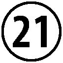 プッサ 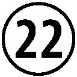 ヴィパッシー 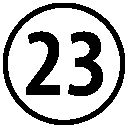 シキー
ヴェッサブー 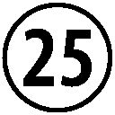 カクサンダ 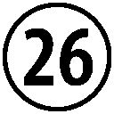 コーナーガマナ 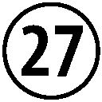 カッサパ
ゴータマ
これら二十八仏のうち、二十二番目のヴィパッシーから、二十八番目のゴータマ・ブッダまでを指して、過去七仏といいます。この過去七仏が共通して説いた教え を、 七 仏 通 戒 偈 といい、その内容がダンマパダという経典のなかに紹介されています。
いかなる悪も行なわず もっぱら善を完成し
自己の心を浄くする これが諸仏の教えなり
（ダンマパダ１８３ 片山一良訳）
「悪いことをせず、よい行いをする」という、一見素朴で当たり前のように思える言葉です。なぜ、このような教えがゴータマ・ブッダのみならず、過去の多くのブッダに共通して説かれた教えだというのでしょうか？
四法印の項目で詳しくお話ししましたが、仏教の教えの核には無常・苦・無我というこの世の真の姿を説いたものがあります。これらの教えは、私たちを誤った認識や、執着から解き放つためにあるものですから、本質的にはポジティブなものです。けれども、ともすれば無常や苦といった考えは、冷たく、虚無的なものに受け取られてしまう危険性もあります。
もちろん、本来仏教はそのような虚無的な教えなどではありません。仏教とは、自分自身と、そして自分を取り巻く社会をより明るく、健全に成長させていこうとする教えです。この七仏通戒偈は、そのような仏教の真髄を、誰にでもわかるようなやさしい言葉で説いたものなのです。
21 ＼ 七 覚 支
七 覚 支 の「覚支」というのは、「悟りを支えるもの」という意味です。言い換えるなら、悟りを確立させるための七つの要素 が七覚支 です。この七つのうち、どれが欠けても悟りをひらくことはできないとされています。
七覚支の一番目は、念 覚 支 です。これは、気づきの瞑想などを実践することにより、過去や未来に心がさまようことなく、今この瞬間に気づいていることです。詳しくは、「一念」の項目で説明しましたね。
七覚支の二番目は、択 法 覚 支 です。これは、念覚支が育ってくることによって、ものごとを正しく判断する智慧が育ってくることです。日常生活で、だんだんと間違ったおこないをすることが少なくなってくることを指します。
七覚支の三番目は、精 進 覚 支 です。これは、精進、努力をすることです。ただし、ここでいう努力とはスポーツや受験勉強に努力をすることではなく、自分の心を育てることに努力をするということに限られます。
七覚支の四番目は、喜 覚 支 です。「喜」という字が入っているので、何か楽しいことかな、と思いますね。確かに喜覚支は喜びの感覚ですが、一般的に言われている喜びの感覚とは、少し違います。
普通にいう喜びの感覚とは、素敵な音楽を聴いたり、おいしいものを食べたりといった何かの「刺激」を感じたときに感じる喜びですね。
それに対して、喜覚支の喜びとはそのような「刺激」から離れることから生まれてくる喜びです。
音楽の例えでいうと、何か曲を聴いて楽しむ喜びではなく、静寂そのものを楽しむ感覚です。ですから、この喜びは、少し難しい言葉でいうと、「離欲の喜び」といわれることがあります。
七つそろえば悟りが開ける
七覚支の五番目は、軽 安 覚 支 です。喜覚支がしっかり確立されてくると、もはや今までのように、「あれが欲しい、これが欲しい」と新しい刺激を追い求めることがなくなり、それに伴って時間や労力の余裕が生まれます。そのことによる、あくせくしない、リラックスした感覚を軽安といいます。
そのような自然でリラックスしたライフスタイルが確立されるのが、軽安覚支なのです。
七覚支の六番目は、定 覚 支 です。ここでは、一つ前の軽安覚支が確立していますから、とてもリラックスした状態になっています。
すると、そのリラックスした状態から、集中力が生まれてきます。気持ちが落ち着かず、あくせくしていると心が過去や未来にさまよってしまいますから、真の意味での集中力は生まれません。
しかし、ここではすでにとてもリラックスした状態にありますから、自然と集中力が生じてきます。その集中力が、定覚支なのです。
七覚支の最後、七番目は、捨 覚 支 です。ここで「捨」という字が出てきますが、これは何かを捨てるという意味ではありません。ここでいう「捨」とは、あらゆる対象を偏りなく、平等な眼差しで見つめる心のことです。
定覚支の段階で心に強い集中力が生まれているため、もはやぼんやりとした迷いの心が生じる余地はありません。その集中力のある明晰な状態から生まれる冷静な心が、捨覚支なのです。
これら七種類の心が育てば、自然と悟りを開くことができます。悟りを開くというと大げさですが、心のトレーニングとして一番目の念覚支にチャレンジしてみるだけでも、人間関係の改善などに大きな効果があることは間違いないでしょう。
22 ＼ 七 宝
七 宝 とは、仏教の経典のなかにしばしば登場する、七つの貴金属や宝石のことです。
七宝の一番目は、金です。いわゆる、ゴールドですね。
七宝の二番目は、銀です。これも、貴金属のシルバーです。
七宝の三番目は、瑠 璃 です。
これは、ラピスラズリのことです。最近では、パワーストーンなどと呼ばれ、街でアクセサリーとして身につけている女性をときどき見かけますね。
七宝の四番目は、頗 黎 です。頗黎は、水晶の別名です。水晶もパワーストーンとして人気がありますね。
七宝の五番目は、硨 磲 です。硨磲とは、大蛤 のことです。
七宝の六番目は、珊瑚 です。珊瑚は古来より宝石として珍重され、三月の誕生石にもなっています。
七宝の七番目は、瑪瑙 です。
ただし、七宝における瑪瑙とは深緑色の玉のことを指し、現在一般的にいうところの瑪瑙とは異なるという説もあります。
以上が、七宝の概要です。
これらの七宝は、仏教経典のなかで極楽浄土を描写する際に、その美しさを表現するものとしてよく用いられることがあります。
また、この七つの宝石の組み合わせは経典の描写によってしばしば異なることがあり、法華経では頗黎や珊瑚の代わりに、真珠と玫瑰を加えたものを七宝としています。
23 ＼ 八 正 道
ブッダが四聖諦（四諦）の真理を説いたとき、私たちの苦しみをなくすための真理 として語った滅 諦 の内容が、八正道 です。八正道は八つの項目からなる修行の道で、これを完成させることにより、あらゆる苦しみをなくすことができます。
八正道の一番目は、正 見 です。正見とは、物事に対する正しい見方のことです。私たちが情報に接するときには、偏見などない、中立的な観点から物事を理解することが大切です。
八正道の二番目は、正 思 惟 です。正思惟とは、四無量心のような健全な考えを心に育むことを意味します。他の生命や、自分自身に対して否定的な感情を抱かず、自分や社会が建設的に発展していくような思考を心がけるなら、それは正思惟であると言えます。
八正道の三番目は、正 語 です。正語とは、正しい言葉を話すことです。この「正しい言葉」というのは仏教では具体的に定義されていまして、①妄語（嘘）、②両舌（二枚舌）、③悪口、④綺語（真実に反した飾りたてた言葉）を話さないならば、それは正語だといえます。
八正道の四番目は、正 業 です。正業とは、他の生命に害にならない行動をとることです。具体的には、①殺生、②窃盗、③邪淫の三つの悪い行為を避け、他の生命の助けとなることをすることが、正業の実践です。
八正道の五番目は、正 命 です。正命とは、正しい仕事に従事するということです。
具体的には、①武器、②毒、③酒、④麻薬の製造、売買、⑤動物の売買や他人から搾取するような仕事を避け、社会のためになるような仕事に就くことを意味します。
八正道の六番目は、正 精 進 です。正精進とは、この八正道の各項目を一生懸命努力して、実践することです。仏教では、やみくもに何に対しても努力することは薦めていないため、八正道以外の何かに必死に打ち込んだとしても、それは正精進とはいいません。
八正道の七番目は、正 念 です。正念とは、「今・ここ」で起きている物事に、きちんと気づいていることです。これは、一念の項目で説明した気づきと同じものです。過去や未来のことを考えずに、ありのままの現在に落ち着いていることですね。正念があるとき、物事の正しい姿が理解できるため、正見が生まれます。
八正道の最後、八番目は正 定 です。正定とは、瞑想をすることなどによって得られる、心の集中力のことです。ここでいう集中力とは、スポーツやゲームなどに対する集中力などではなく、純粋に仏教の修行のための集中に限定されたものです。
これらの八正道を実践していくことにより、完全な心の自由を得ることができると、ブッダは説きました。
ただ、そのような究極のレベルにまで修行を完成させることを目指さなくとも、これらの八項目のうちのどれかを自分のできる範囲で実践するならば、毎日の生活がより安全で、充実したものになるのは間違いありません。
例えば、正語で説かれている嘘や悪口を慎むというのは、仏教を学ぶ学ばないに関わらず、実践するなら人間関係を豊かにすることに、大いに役立つものになるでしょう。
24 ＼ 八 斎 戒
比丘の二百二十七の戒律ほどではありませんが、在家の仏教徒にも守るべき戒律があります。毎日の生活のなかで、最低限このことは守ったほうがよいと考えられている戒律 が、五戒 です。これは、その名の通り五つの戒律からなります。
五戒の一番目は、不 殺 生 戒 です。これは、生き物を殺さないという戒律です。
五戒の二番目は、不 偸 盗 戒 です。不偸盗戒とは、他人のものを盗まないという戒律です。
五戒の三番目は、不 邪 淫 戒 です。不邪淫戒とは、倫理に反する性行為をしないという戒律です。
五戒の四番目は、不 妄 語 戒 です。不妄語戒とは、嘘をつかないようにするという戒律です。
五戒の五番目は、不 飲 酒 戒 です。不飲酒戒とは、酒や麻薬など自分を酔わせるものをとらないようにするという戒律です。
これら五つの項目は、いつでも守るべきと考えられている戒律です。
また、タイなどの仏教国では、満月、新月、半月の日を、布薩（ウポーサタ）日といっています。この布薩日は、在家の仏教徒がお寺にいって法話を聴いたり、瞑想をしたりして一日を過ごす日のことで、この日には通常の五戒に加え、さらに三つの戒律を守る人が多くいます。この、八つの戒律が、八斎戒です。
八斎戒では、五戒の三番目である不邪淫戒が、不 非 梵 行 戒 に変わります。不非梵行戒とは、あらゆる性行為をおこなわないようにする、ということです。そのほかの四つの戒律は、五戒と同じです。
八斎戒の六番目は、不 非 時 食 戒 です。不非時食戒とは、正午を過ぎたら食事をとらないという戒律です。
八斎戒の七番目は、不 歌 舞 観 聴 塗 飾 香 鬘 戒 です。これは、修行の妨げになる踊りを観たり、音楽を楽しんだりしないこと。そして、装飾品を身につけたり、化粧をするなど自らを着飾ったりすることをしないという戒律です。
八斎戒の八番目は、不 用 高 床 広 床 戒 です。不用高床広床戒は、高くて広いベッドに寝ないということです。不必要に豪華なベッドに寝ないということですね。
先ほども述べたように、五戒は常に守ったほうがよいものですが、八斎戒は自分で守るべき時期を決めて守るものです。
また、これはとても大切なことですが、仏教の戒律は、通常戒律という言葉から連想される、破れば罰を与えられるというものではありません。
仏教の戒律は、あくまで自分の心を成長させるためのツールとしてあるものですから、破ってしまったからといって、ネガティブな気持ちになる必要はまったくないのです。戒律を破ってしまったことに気づいたら、反省し、再び戒律を守ることにチャレンジすればよいのです。
ちなみに、西遊記の人気キャラクター、猪八戒の「八戒」も、この八斎戒が由来です。かつては天界にいた猪八戒は、素行の悪さから人間界に落とされ、妖怪の姿にされてしまいます。しかし、後に三蔵法師と出会い、その弟子の孫悟空に敗れた猪八戒は、三蔵法師の弟子となります。このとき、三蔵法師から授けられたのが八戒だったため、彼は猪八戒と呼ばれるようになったのです。
25 ＼ 十 波 羅 蜜
仏教の経典では、ゴータマ・ブッダは遥かな昔、スメーダという名の男性としてこの世界に生を受けたといいます。やがて青年となったスメーダは、過去二十八仏の項目でも登場したディーパンカラ・ブッダと出会い、いつの日かブッダとして悟りを開くであろうという予言を受けました。
そして、途方も無い長い時間を修行者として徳を実践し、やがて今から二六〇〇年前にゴータマ・ブッダとして悟りを開くわけですが、このときにブッダが実践をした徳目を十 波 羅 蜜 といいます。
十波羅蜜の各項目は、以下の通りです。
①布 施 波 羅 蜜 布施をするという徳の実践のこと。
②持 戒 波 羅 蜜 戒律を守るという徳の実践のこと。
③出 離 波 羅 蜜 欲や怒りから離れるという徳の実践のこと。
④智 慧 波 羅 蜜 智慧を養うという徳の実践のこと。
⑤精 進 波 羅 蜜 精進して修行をするという徳の実践のこと。
⑥忍 辱 波 羅 蜜 苦難に耐え忍ぶという徳の実践のこと。
⑦真 実 波 羅 蜜 正直に生きるという徳の実践のこと。
⑧決 意 波 羅 蜜 試練にあっても揺るがず仏法を学び続けるという徳の実践のこと。
⑨慈 波 羅 蜜 慈しみの心を養うという徳の実践のこと。
⑩捨 波 羅 蜜 平静で物事を平等にみる心を養うという徳の実践のこと。
ブッダは何度も何度も、ときには人間以外の生き物にも転生しながら、この十波羅蜜の徳目を積み重ねていきました。そうしたブッダの修行者としての姿を描いた経典が『ジャータカ』です。
『ジャータカ』は多彩な内容に富み、イソップ物語や、今昔物語にも影響を与えたといわれています。
26 ＼ 十 二 因 縁
仏教は合理的な因果関係を説く教えですが、その因果の連鎖を体系化したものを、十二因縁といいます。十二因縁の各項目は、以下の通りです。
①無 明 自らの生が何に衝き動かされているかについて無自覚なこと。あらゆる煩悩の源となる煩悩である。
②行 無明を縁として、身 口 意 の三業を生み出すもの。
③識 眼耳 鼻 舌 身 意 による認識主観のこと。
④名 色 心と物質のこと。
⑤六処 眼耳鼻舌身意という六つの認識器官のこと。
⑥触 眼耳鼻舌身意に、外界の情報が触れること。
⑦受 楽、苦などの感覚のこと。
⑧愛 渇愛のこと。
⑨取 対象に対して執着すること。
⑩有 視覚、聴覚などの情報に触れ「生きている」という実感のあること。
⑪生 「生きている」という充実感によって、来世に転生すること。
⑫老 死 転生しても、やがては老い、死んでしまうという事実のこと。
これらの十二の項目は①無明→②行→③識→④名色...と数字の順に連関していき、⑫老死に達したところで①無明に戻り循環します。この、果てしのない循環が輪廻です。
このような輪廻の世界から脱出するためには、一番目の原因である、無明を断つ必要があります。そして、そのための具体的な方法を説いたものが八正道なのです。
27 ＼ 三 十 二 相 八 十 種 好
経典のなかに記されたブッダの身体的な特徴をまとめたもの を、 三 十 二 相 八 十 種 好 といいます。
そのうち、顕著で分かりやすい三十二の身体的特徴をまとめたものが、三十二相です。
そして、より細かな特徴八十種類をまとめたものが、八十種好と呼ばれます。ここでは、紙幅の関係から八十種好は省略し、三十二相も数が多いため箇条書きの形式で各項目をご紹介いたします。
三十二相
①足 下 安 平 立 相 足の裏が平らで地面に密着している。
②足 下 二 輪 相 足の裏に車輪の形の文様がある。
③長 指 相 手足の指が長い。
④足 跟 広 平 相 足のかかとが広く平らである。
⑤手 足 指 縵 網 相 手足の指の間に水かきがある。
⑥手 足 柔 軟 相 手足が柔らかい。
⑦足 趺 高 満 相 足の甲が高く盛り上がっている。
⑧伊 泥 延 膊 相 足のふくらはぎが鹿王のふくらはぎのようである。
⑨正 立 手 摩 膝 相 直立したときに、両手が膝に届くほど長い。
⑩陰 蔵 相 陰部が馬のように腹中に隠れている。
⑪身 広 長 等 相 両手を広げた際の長さと、身長の高さが等しい。
⑫毛 上 向 相 身体の全ての毛が青く、右旋しながら上を向いている。
⑬一 一 孔 一 毛 生 相 一つの毛穴からは一本の毛が生えている。
⑭金 色 相 全身が金色に輝いている。
⑮丈 光 相 身体から光を発し、三メートル四方を照らす。
⑯細 薄 皮 相 身体の皮が薄い。
⑰七 処 隆 満 相 両手、両足下、両肩、うなじの七ヶ所の肉が隆起している。
⑱両 腋 下 隆 満 相 両脇の下の肉付きがよい。
⑲上 身 如 師 子 相 上半身に威厳があり、あたかも獅子のようである。
⑳大 直 身 相 身体は真っ直ぐとしている。
肩 円 満 相 肩は丸く豊かである。
四 十 歯 相 歯は四十本ある。
歯 斉 相 歯並びが美しい。
牙 白 相 四本ある犬歯は白く、美しい。
師 子 頰 相 獅子のように両頬が膨らんでいる。
味 中 得 上 味 相 何を食べてもその食物の最上の味を味わうことができる。
大 舌 相 舌が長く、顔を覆って髪の生え際までとどくほどである。
梵 声 相 声は清らかで、梵天の声のようである。
真 青 眼 相 青い蓮華のような眼をしている。
牛 眼 睫 相 まつ毛は長く、美しく整っている。
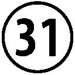 頂 髻 相 頭頂部に肉 髻 という隆起した部分がある。
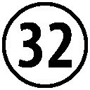 白 毛 相 眉間に白毛があり、光を放っている。この白毛は伸ばすと四・五メートルにもなるが、普段は右巻きに収められている。
三十二相を知ると仏像の見方が変わる
これらの項目の中には、歯並びの美しさなど比較的常識的なものもありますが、直立したときに、両手が膝に届くほど長かったり、手足の指の間に水かきがあるなど、一目で見ただけで常人離れして見える身体的特徴も含まれます。
しかし、仏典のなかには、ブッダ在世時に彼に遭遇した人たちの多くが、ブッダの容貌を普通の人と同じように見做していたと思われる記述が散見されます。もし、三十二相の特徴が全て文字通りであるならば、ブッダに出会った人々はもう少し驚いてもいいように思われます。
一方で、経典のなかにはブッダの姿の優美さ、荘厳さから心を打たれ、彼に教えを乞うた人々のエピソードも多く含まれます。
そう考えると、この三十二相の特徴は、ブッダの姿の優雅さが、後世においてより神秘性を帯びて潤色されたものだと考えることができるかもしれません。
そして、現在ある仏像や仏画の多くは、この三十二相の特徴をもとに、ブッダの姿を描いたものです。仏像にある光背は、丈光相を表現したものなのです。
手塚治虫の人気漫画『ブッダ』におけるブッダ像も、頂髻相や白毛相といった三十二相を踏まえて描かれています。
この三十二相の特徴を頭に入れておくと、また違った目で仏像を鑑賞することができるかもしれませんね。
28 ＼ 三 十 七 菩 提 分 法
さまざまな種類がある仏教の修行法の集大成 といえるものが、 三 十 七 菩 提 分 法 です。三十七菩提分法は三十七種類の修行法を集めたもので、そのなかには以前の項目で紹介した七覚支や八正道も含まれます。
四 念 処
三十七菩提分法の第一のグループは、四念処といいます。四念処の「念処」とは、「気づきの対象」という意味です。四念処は、以下の四つからなります。
①身 念 処 身体を対象に、気づきを実践すること。
②受 念 処 楽、苦などの感覚に対して、気づきを実践すること。
③心 念 処 心の働きに対して、気づきを実践すること。
④法 念 処 四聖諦などの法（ダルマ）に対して、気づきを実践すること。
四 正 勤
三十七菩提分法の第二のグループは、四正勤といいます。正勤とは、悟りへの道において、障害となる悪いことを慎み、悟りを開くために必要な善行為を積極的におこなうことをいいます。言い換えるなら、正しい努力のことです。四正勤は、以下の四つからなります。
⑤断 断 すでに起こっている悪を断つ努力のこと。
⑥律 義 断 いまだ生じていない悪は、これを起こさない努力のこと。
⑦随 護 断 いまだ生じていない善を起こす努力のこと。
⑧修 断 すでに起こっている善は、これを大きくする努力のこと。
四 神 足
三十七菩提分法の第三のグループは、四神足といいます。神足とは、悟りを開いたり、神通力を得るための基礎となる心の力のことです。四神足は、以下の四つからなります。
⑨欲 神 足 意欲をもって物事を成し遂げる心の力のこと。
⑩精 進 神 足 物事を精進することによって成し遂げる心の力のこと。
⑪心 神 足 散漫にならないよう集中する心の力のこと。
⑫思 惟 神 足 正しい熟考によって物事を改善させる心の力のこと。
五 根
三十七菩提分法の第四のグループは、五根といいます。五根の「根」とはパーリ語でインドリィヤといい、「能力」を意味します。根とは、悟りを実現させるために必要な能力のことなのです。五根は、以下の五つからなります。
⑬信 根 物事を、理性的な理解によって納得し、確信する能力のこと。
⑭精 進 根 精進、努力できるという能力のこと。
⑮念 根 「今・ここ」で生じている現象に対して、気づきを持つことができる能力のこと。
⑯定 根 瞑想の実践などにより得られる、精神の統一・集中の能力のこと。
⑰慧 根 現象をありのままに見ることのできる能力のこと。
五 力
三十七菩提分法の第五のグループは、五 力 といいます。五根が能力を意味するのに対して、その能力の実際の働きを力 といいます。五力は、以下の五つからなります。
⑱信 力 物事を、理性的な理解によって納得し、確信すること。
⑲精 進 力 精進、努力をすること。
⑳念 力 「今・ここ」で生じている現象に対して、気づきを持つこと。
定 力 瞑想の実践などにより、精神を統一・集中させること。
慧 力 現象をありのままに観察すること。
七 覚 支
三十七菩提分法の第六のグループは、七 覚 支 です。七覚支については、その項目で説明しましたので、ここでは項目だけ上げさせていただきます。
択 法 覚 支 精 進 覚 支 喜 覚 支 軽 安 覚 支
定 覚 支 捨 覚 支 念 覚 支
八 正 道
三十七菩提分法の第七のグループは、八 正 道 です。八正道についても、その項目で説明しましたね。これも、ここでは項目だけ上げさせていただきます。
正 見 正 思 惟 正 語 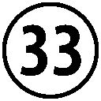 正 業
正 命 正 精 進 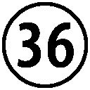 正 念 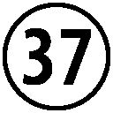 正 定
こうして三十七菩提分法を概観してみると、あまりの数の多さに
「これを全部習得しないと、悟りを開けないのか...」
と思ってしまうかもしれませんが、そのようなことはありません。
四念処から八正道まで、どのグループの実践に取り組んでも、悟りを開くことができると経典に説かれています。
ですから、まずは自分のやりやすいものから、実践していってみるのがよいでしょう。
29 ＼ 百 八 渇 愛
毎年、大晦日に撞かれる除夜の鐘。この除夜の鐘は百八回撞かれますが、この数は、人間のあらゆる煩悩の数を表したものとされています。
古来よりインドでは大きな数を表す表現として、百八の数が使われており、またその百八の煩悩の内容にも、様々な説があります。ここでは、結（サムヨージャナ）と呼ばれる、仏教の代表的な十種類の煩悩をご紹介いたします。
十結
①有 身 見 「私」という概念が実体のあるものだと思いこみ、身体や心が自分のものだと勘違いしてしまうこと。
②疑 道理を理解せず、頑固に不信感を募らせるような心の状態のこと。
③戒 禁 取 特定の戒律や儀式、習慣に執着すること。
④欲 愛 見るものや聞くものなどの情報に快楽を感じ、執着すること。
⑤激 怒 気に入らないものへ強烈な嫌悪や怒りをもつこと。
⑥色 貪 色界に対して執着をもつこと。
⑦無 色 貪 無色界に対して執着をもつこと。
⑧慢 「私が存在する」という実感から、自分を基準にして他者と比べたり、驕り高ぶること。
⑨掉 挙 心が落ち着いていない、混乱状態のこと。
⑩無 明 自らの生が何に衝き動かされているかについて無自覚なこと。あらゆる煩悩の源となる煩悩である。
これらの煩悩を少しずつでも克服していくには、やはり気づきの実践が最も有効です。仏教では、本来鐘の音は時報のためではなく、今この瞬間に意識を戻すための「気づきの鐘」として鳴らされたものだといいます。ぜひ、年末に除夜の鐘の音を聞かれるときには、このことを思い出してみてはいかがでしょうか。
30 ＼ 五 十 六 億 七 千 万 年
ゴータマ・ブッダの次に二十九番目のブッダとして、やがてこの世界に出現するといわれているのが、弥勒仏（マイトレーヤ・ブッダ）です。その時期は、ゴータマ・ブッダの入滅から五十六億七千万年後といわれ、その際には多くの人々も共に悟りを開くといわれています。
このエピソードは、この世の終わりの時期に救世主が現れ、人々を苦難から救うとする終末論を連想させるような話です。
確かに、パーリ三蔵の長部経典にある「転 輪 聖 王 獅 子 吼 経 」には、刀 の中 劫 という人類の大半が死滅してしまうような最終戦争が描かれています。映画『風の谷のナウシカ』の「火の七日間」を連想させるような刀の中劫は七日の間続き、僻地に身を隠した一部の人たちだけが、かろうじて生き残ったと経典には述べられています。
しかしながら、宗教学者の大田俊寛博士も指摘するように、仏教はもともとあまり終末論的な世界観に馴染まない宗教です。
なぜなら四法印の項目でご紹介したように、無常・苦・無我を柱とする仏教の教えでは、どの時点をこの世の終わりにするかといった議論にあまり重きをおきようがないのです。
五十六億七千万年後に現れるとされる、弥勒仏の出現時期については諸説あり、実際はもう少し近い未来なのではないかといわれることもあります。けれども、それにしても気の遠くなるような途方もない未来であることには変わりはありません。
そんな遥かな未来まで苦しみ続けるというのも何か損したような気分ですから、私たちは弥勒仏が現れるのを待つよりも、地道に自分たちで修行をし、悟りを開いてしまうのが苦労も少なくよさそうです。
参考文献
アルボムッレ・スマナサーラ『沙門果経』（サンガ、２００９年）
アルボムッレ・スマナサーラ／藤本晃『ブッダの実践心理学 第一巻ー第六巻』（サンガ、２００５─２０１０年）
ウ・コーサッラ西澤『アビダンマ基礎講座用テキスト』（非売品、２０１１年）
大田俊寛『オウム真理教の精神史』（春秋社、２０１１年）
片山一良『「ダンマパダ」をよむ』（ＮＨＫ出版、２００７年）
片山一良『ブッダのことば パーリ仏典入門』（大法輪閣、２００８年）
佐藤哲朗「パーリ三蔵読破への道 第七回 弥勒（マイトレーヤ）を待ちわびて」『サンガジャパン Vol.7』（サンガ、２０１１年）
星飛雄馬『初期仏教キーワード』（サンガ、２００８年）
ポー・オー・パユットー『仏教辞典（仏法篇） 増補改訂版』野中耕一訳（非売品、２０１０年）
藤本晃『ブッダの神通力』（サンガ、２０１１年）
毎日新聞社編『魅惑の仏像 四天王』（毎日新聞社、２０００年）
水野弘元『仏教要語の基礎知識』（春秋社、２００６年）
『岩波 仏教辞典 第二版』（岩波書店、２００２年）
『仏教学辞典』（法蔵館、１９９５年）
Conclusion ＼ おわりに
三月十一日、東日本大震災が発生し、東北地方を中心に地震、津波などにより多くのかたが想像を超える被害を受けました。
震災発生当日、神保町にある出版社で仕事をしていた私は交通機関の停止からそのまま会社で一夜を明かすこととなり、本社のある仙台ともなかなか連絡がつかない状態が続きました。
翌日帰宅することができ、仙台の本社ともようやく連絡がとれるようになりましたが、落ち着くまもなく福島で原子力発電所の事故が発生しました。そうして今現在四ヶ月ほどたちますが、原発事故の収束の見通しは立たず、地震や津波の被災地の復興は遅々として進みません。
このような状況のなか、仏教者として何かできることはないだろうかと思っていた矢先に、この本の企画のご提案を受けました。
かつて社会が大きな変革期を迎えていた鎌倉時代、曹洞宗や浄土真宗といった現在まで続く宗派が生まれました。それまでの平安仏教があくまでエリート中心の教えであったのに対して、鎌倉仏教は武士や庶民などの層に多くの帰依者を生んでいきました。その背景には、鎌倉仏教が一般大衆の人生の悩み苦しみの解決に直結する、実践的な教えを含んでいたことがあるでしょう。
あらゆる思想は、それを求める人の人生において実践的に役に立つものでなければ、意味がありません。ありがたい仏像や古寺を巡ったりすることは、仏教を鑑賞することであっても、仏教を学ぶことではありません。そうではなく、七仏通戒偈にあるように、より善く生きるために役立つものこそが仏道なのであると伝われば、幸いに思います。
最後になりましたが、今回の出版に際して、マガジンハウスの石崎直樹さんに大変お世話になりました。重ねて御礼申し上げます。今回の執筆を通じ学んだことをもとに、今後もよりよい仏教の本の執筆ができることを願っております。
２０１１年７月29 日
星 飛雄馬
星 飛雄馬 ほし・ひゅうま
1974年長野県生まれ。仏教ライター・著述家・翻訳家。東京都立大学大学院社会科学研究科修士課程修了。東京大学社会情報研究所教育部修了。修士（社会学）（東京都立大学、2001年）。専門は宗教社会学、社会政策。2004年ミャンマー、ヤンゴンのマハーシ瞑想センターにて約3ヵ月瞑想修行をする。チベット自由人権日本100人委員会顧問兼委員。日本テーラワーダ仏教協会会員。著書に『初期仏教キーワード』（サンガ）、共著に『やさしいベーシック・インカム』（サンガ）、訳書に『手放す生き方』（サンガ）などがある。
E-mail : infohoshi@gmail.com
Home Page:http://d.hatena.ne.jp/Huma/
Twitter: @humahoshi
装丁／寄藤文平、柴田拓也（文平銀座）
この作品は２０１１年９月にマガジンハウスより発行された「45 分でわかる！ 数字で学ぶ仏教語。」の電子書籍版です。
45 分でわかる！
数字で学ぶ仏教語。
発行日 ２０１１年９月15 日
著 者 星 飛雄馬
発行者 石﨑 孟
発行所 株式会社マガジンハウス
〒１０４－８００３ 東京都中央区銀座３－13 －10
書籍編集部 ０３－３５４５－７０３０
マガジンハウス・ホームページ
©2011 Huma Hoshi